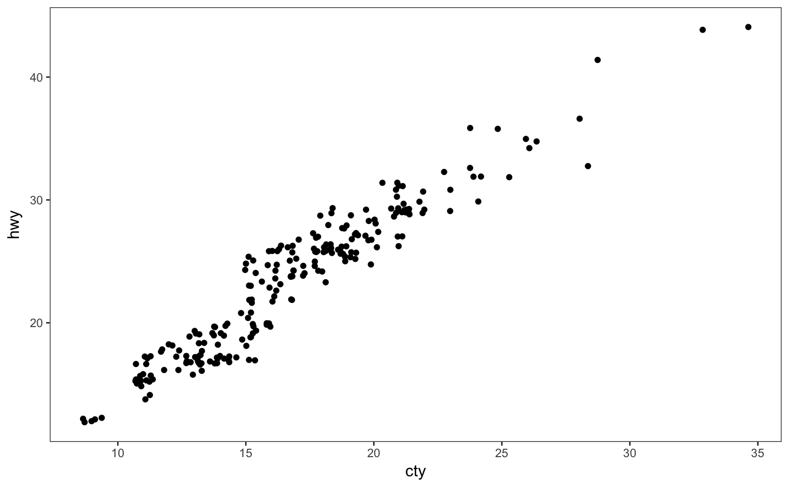

theme_apa() is designed to work like any other complete theme from
ggplot. To the extent possible, it aligns with
the (vague) APA figure guidelines.
theme_apa(legend.pos = "topleft", legend.use.title = FALSE, legend.font.size = 12, x.font.size = 12, y.font.size = 12, facet.title.size = 12)
| legend.pos | One of |
|---|---|
| legend.use.title | Logical. Specify whether to include a legend title. Defaults
to |
| legend.font.size | Integer indicating the font size of the labels in the legend. Default and APA-recommended is 12, but if there are many labels it may be necessary to choose a smaller size. |
| x.font.size | Font size of x-axis label. |
| y.font.size | Font size of x-axis label. |
| facet.title.size | Font size of facet labels. |
This function applies a theme to ggplot2 figures with a style
that is roughly in line with APA guidelines. Users may need to perform further
operations for their specific use cases.
There are some things to keep in mind about APA style figures:
Main titles should be written in the word processor or typesetter rather than on the plot image itself.
In some cases, users can forgo a legend in favor of describing the figure in a caption (also written in the word processor/typesetter).
Legends are typically embedded on the coordinate plane of the figure
rather than next to it, as is default in ggplot2.
Use of color is generally discouraged since most of the applications for which APA figures are needed involve eventual publication in non-color print media.
There are no hard and fast rules on font size, though APA recommends choosing between 8 and 14-point. Fonts in figures should be sans serif.
Because APA style calls for positioning legends on the plane itself, this
function includes options for choosing a position--top left, top right, bottom
left, bottom right--to place the legend. ggplot2 provides no obvious
way to automatically choose a position that overlaps least with the geoms (the
plotted data), so users will need to choose one.
Facetting is supported, but APA guidelines are considerably less clear for such situations.
This theme was created with inspiration from Rudolf Cardinal's
code, which
required updating for newer versions of ggplot2 and adaptations for
APA style.
American Psychological Association. (2010). Publication manual of the American Psychological Association, Sixth Edition. Washington, DC: American Psychological Association.
Nicol, A.A.M. & Pexman, P.M. (2010). Displaying your findings: A practical guide for creating figures, posters, and presentations, Sixth Edition. Washington, D.C.: American Psychological Association.
# Create plot with ggplot2 library(ggplot2) plot <- ggplot(mpg, aes(cty, hwy)) + geom_jitter() # Add APA theme with defaults plot + theme_apa()